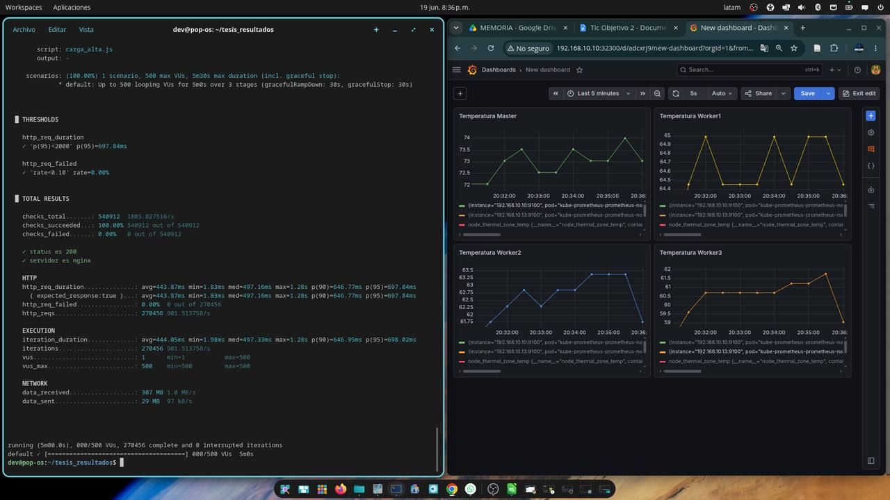
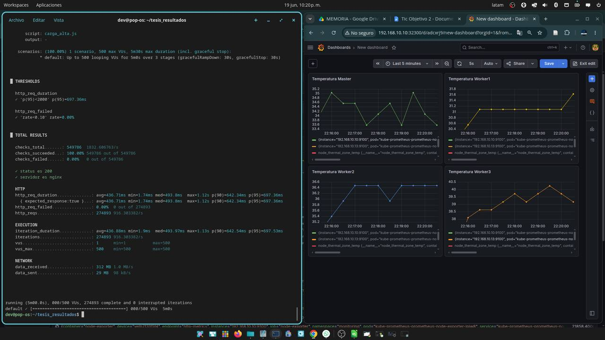
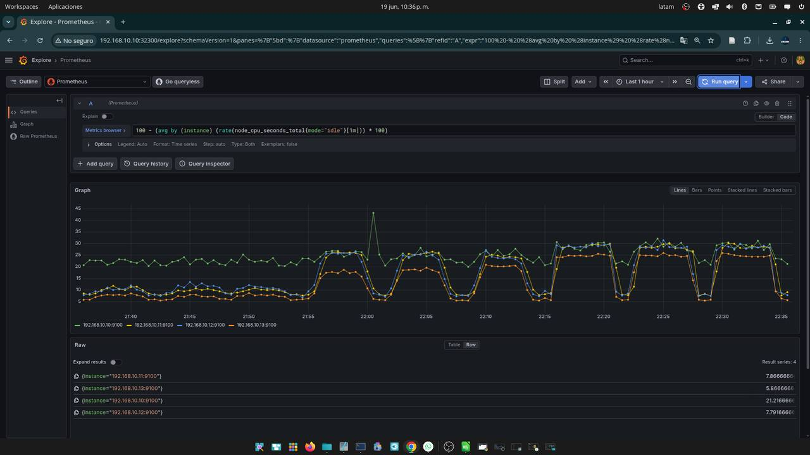

Resultados y modelo 3D · Tesis de Diego Oswaldo Márquez Paccha · UNL 2026
Resultados de la tesis y modelo 3D del prototipo.
El límite del rendimiento no es la temperatura ni el procesador, sino la red de los nodos trabajadores: en la Raspberry Pi 3, el Ethernet pasa por el bus USB.
Arrastra para girar · pellizca para acercar · carcasa impresa en 3D, 8 piezas, 17 × 17 × 14 cm
| Nivel | Escenario | Throughput (pet./s) | Lat. media (ms) | p95 (ms) |
|---|---|---|---|---|
| 50 usuarios | Sin refrig. | 39.93 ± 0.10 | 3.16 ± 0.03 | 3.66 ± 0.02 |
| 50 usuarios | Con refrig. | 39.97 ± 0.20 | 3.11 ± 0.01 | 3.60 ± 0.02 |
| 200 usuarios | Sin refrig. | 318.00 ± 0.28 | 2.99 ± 0.02 | 3.85 ± 0.03 |
| 200 usuarios | Con refrig. | 317.91 ± 0.28 | 2.95 ± 0.03 | 3.82 ± 0.05 |
| 500 usuarios | Sin refrig. | 900.82 ± 4.69 | 444.23 ± 2.31 | 701.77 ± 3.79 |
| 500 usuarios | Con refrig. | 915.50 ± 3.25 | 437.10 ± 1.55 | 700.22 ± 2.47 |
Media ± desviación estándar de tres repeticiones. 0.00 % de fallos en todas. Coeficientes de variación por debajo del 0.6 %.
| Nodo (carga alta) | Sin refrig. (°C) | Con refrig. (°C) | Reducción |
|---|---|---|---|
| Maestro · Pi 4B | 74.33 | 34.93 | −39.40 |
| Trabajador 1 · Pi 3B+ | 65.33 | 31.60 | −33.73 |
| Trabajador 2 · Pi 3B | 63.57 | 36.67 | −26.90 |
| Trabajador 3 · Pi 3B | 61.77 | 39.87 | −21.90 |
Con casi 40 °C menos, el throughput mejoró solo 1.6 % y la latencia p95 un 0.2 %. El umbral de thermal throttling (80–85 °C) nunca se alcanzó.



Única variable modificada: el tráfico entra directo por los tres trabajadores en lugar de por el maestro.
| Métrica | Centralizado | Distribuido | Diferencia |
|---|---|---|---|
| Throughput (pet./s) | 915.50 ± 3.25 | 946.96 ± 3.33 | +3.4 % |
| Latencia media (ms) | 437.10 ± 1.55 | 422.58 ± 1.47 | −3.3 % |
| Latencia p95 (ms) | 700.22 ± 2.47 | 870.13 ± 38.26 | +24.3 % |
| Latencia máxima (ms) | 1195.41 | 4339.33 | +263 % |
Casi el mismo throughput y una respuesta más irregular: el límite no estaba en el maestro.
Trabajo de Integración Curricular · Ingeniería en Ciencias de la Computación · Universidad Nacional de Loja · Director: Ing. Cristian Ramiro Narváez Guillén, Mg. Sc.